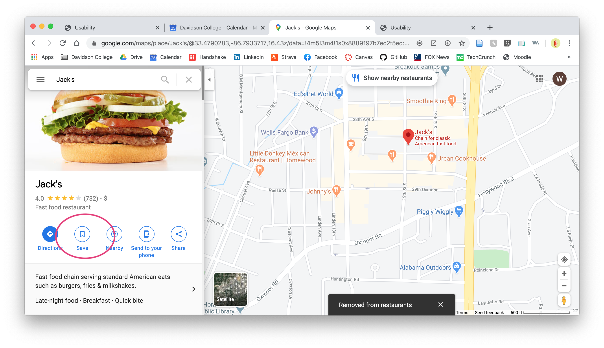

1. Find your current location.
As Sarah opened up Google Maps, the page automatically opened to a map of perhaps a 2 square-mile area
around our location at the time (seen in the header picture above). While I expected Sarah might type the address in the
search bar, she ended up navigating by dragging and zooming in using the trackpad. She was able to find our location visually in about 30 seconds, but it took her another
minute or so to actually pull up the Maps result for the address.
2. Pull up the photos for a restaurant you like.
Here, also, Sarah browsed around by dragging and zooming on the map, rather than searching for a place by name or address.
She found a local fast food restaurant called Jack's on the map and clicked on its Google-style fork-and-knife restaurant icon. That pulled up Google's standard restaurant sidebar.
To access the library of photos, she clicked on the featured image above the restaurant's name. With this step, she arrived on the page shown below with the photos accessible on Google Maps for this restaurant.
3. Save that restaurant to one of your Maps lists.
Sarah had not previously known about this feature on Google Maps, but she correctly navigated back to the overview restaurant page, which shows an icon
to save a location to a list on your account. The icon marked "Save", so it would a pretty straight-forward action for the average user. After Sarah clicked the icon,
the page gave her the visual confirmation that the restaurant had been saved.
